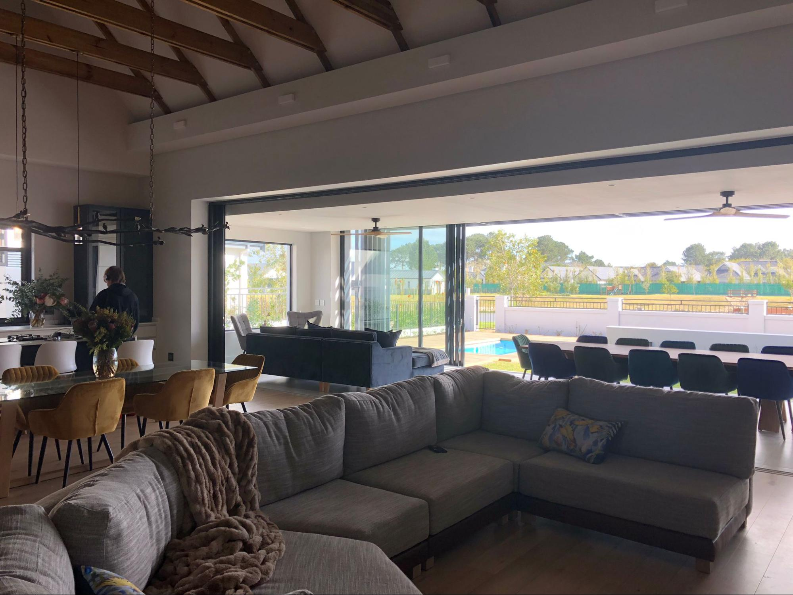

Where Do We Live?
Me and my family moved to Paarl, a small place near Cape Town. We chose Paarl because it's a safe place to live. We visited friends in Paarl in 2023 and found out that living in a gated community has a lot of upsides: it's safe, there are shops, a doctor is available, as is a dentist and there was more than one swimming pool. So it's never boring!
The House
We live in a big villa in a gated community called Val de Vie Estate. We bought a house with multiple bedrooms and a large living room. It has an outside swimming pool with an outside shower. Of course, there is an inside braai, a typical South African BBQ.
My School
Unfortunately, the only thing missing in a gated community is a school. So every day I have to drive early in the morning to school. My parents ride me to school. I have to wear a uniform every day. They are made of cotton, which is very comfortable because of the hot climate. It's a little frightening that I have to leave the gated community. This one time we were not allowed to leave the community because the workers were on strike.

School Activities
We went on a hiking trip to the ocean. They had some outdoor classrooms there. We learned about the culture and history of South Africa here. It's fun to go on trips because I get to explore the country more. I've only been living here for a few months.
What Things Have We Done in Our Free Time?
- We went to the top of Table Mountain: Table Mountain is a famous mountain in South Africa. Long ago, people called it "the mountain in the sea." You can walk on various paths to go up, or if you do not like walking, you can take a cable car. The cable car brings you to the top very fast. You have a great view of the city up there. We decided to take the cable car.
- We loved the African art at Zeitz MOCAA: Zeitz MOCAA is a big art gallery with a lot of modern African art. Art from all over Africa. We loved the art there.
- We visited Kaap de Goede Hoop, which was very windy! Kaap de Goede Hoop or Cape Point is at the most southwestern point of South Africa. It is just as famous as Table Mountain. Many people stop here when they travel around the coast. It felt like we were in the middle of nature.
- We met penguins at Boulders Beach!!! Boulders Beach is near Cape Point. It is a small beach with clear water. There are many African penguins here! Unfortunately, we were not allowed to swim with the penguins.

Where We Ate
The Best Burger
In the picture, you can see me eating a burger. It was the best burger I've ever eaten. The burger was quite expensive for a burger, but it was definitely worth the money. My parents paid for it anyway 😊 The restaurant is called The Dogs Bollocks.
Karibu Restaurant
Karibu Restaurant is in the middle of Cape Town. It is right next to the water. They have many kinds of food. My parents started with soup and salad. I had the braai, which was very nice. The meat was very tender! In the picture you can see a Karibu. I hope I did not eat this one…

Kloof street house
Kloof Street House is in a busy and pretty street in the center of Cape Town. All their meat is from animals who live free and eat only grass. They have many tasty cocktails, I had one without alcohol.
Events and Festivals
Rugby
Rugby is the most important sport in South Africa. The national team is called The Springboks. The team's T-shirt color is green. When they play, most of the people in South Africa are either behind their TV or in the stadium.
Freedom Day: April 27th
On Freedom Day, they celebrate the first democratic elections of South Africa. It was the first non-racial election. Before, only white people were allowed to vote. This year, it was the 30th anniversary.
Nelson Mandela Day: July 18th
On this day, we celebrate the birthday of Nelson Mandela. Mandela is the person who ended apartheid in South Africa. Apartheid is the word used for the discrimination against colored people in South Africa. It's not meant as a public holiday, but people use the day to volunteer for a good cause.
Famous people from South Africa
Of course the most famous person from South Africa is Nelson Mandela. He's known around the world as a freedom fighter without using violence. He lived in prison on Robben island for 27 years. When he was released people celebrated in the streets. He later became the first president of a free South Africa.